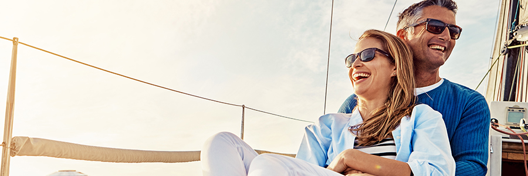

Vacaciones Románticas
Desconéctese del ajetreo de la vida diaria y conéctese de nuevo en unas vacaciones diseñadas para inspirar el romance. El tiempo que pasamos juntos explorando nuevas culturas, disfrutando de sus comidas favoritas, bailando toda la noche o simplemente descansando bajo el sol, nos recuerda que hay más para nosotros que las tareas domésticas.
Ahora es simplemente cuestión de decidir lo que quieres. ¿Te estás inclinando por una escapada romántica a París, la Ciudad del Amor y la Luz, oa Las Vegas, la capital mundial del entretenimiento? ¿Preferiría un resort todo incluido solo para parejas con una reputación de cocina global o uno que se sienta en una hermosa playa? ¿Disfrutaría de un relajante crucero por un río o saltando de isla en isla en un yate?
Nuestros expertos en romance tienen el conocimiento interno y los años de experiencia de viaje para ayudarlo a tomar la decisión correcta y encontrar maneras de hacer de lo que parecen unas vacaciones normales, una diseñada solo para el romance.
Ideas para vacaciones románticas
- Resort solo para adultos: Todo lo que desea, todo lo que pueda desear, está siempre a su alcance, incluida la cocina asiática, auténtica italiana, la vida nocturna e incluso una piscina privada.
- Crucero de lujo en barcos pequeños: evite las multitudes y disfrute de espacios íntimos y un servicio personalizado en un crucero más pequeño o pruebe destinos exóticos a bordo de un yate con todas las comodidades de un hotel.
- Cruceros por el río: piense en su crucero por el río como un hotel flotante con servicio de cinco estrellas y restaurantes, además de una vista impresionante y siempre cambiante fuera de cada ventana de encantadoras ciudades y pueblos de Europa.
Vacaciones románticas en Europa
- París: Observe las luces icónicas de la Torre Eiffel durante un crucero nocturno por el Sena, haga que su dama y el vagabundo se desplacen en un pequeño bistró o se inspiren en el Louvre.
- Venecia: tome un paseo en góndola para dos personas por los canales de ensueño, disfrute de la impresionante arquitectura barroca y de los asombrosos cielos rosados como puestas de sol sobre la Plaza de San Marcos.
- Santorini: la impresionante belleza natural y la variedad de colores, desde las flores magenta hasta los edificios blancos, de esta isla griega volcánica dejarán a cada pareja atónita.
- Budapest: a menudo llamada "París del Este", la elegante arquitectura, los restaurantes íntimos y los cafés lo convierten en el escenario perfecto para unas vacaciones románticas.
VVacaciones románticas en los Estados Unidos
- Nueva York : pasee de la mano por Central Park, visite museos o cene en uno de los muchos cafés y restaurantes románticos que encontrará solo en la Gran Manzana.
- San Francisco: disfrute de la belleza de la ciudad en una caminata al atardecer a lo largo de Warf antes de comer ostras frescas, o considere un crucero nocturno en la bahía para obtener una vista diferente y una excusa para acurrucarse.
- Sabana : el musgo español, los hermosos B&B y el encanto clásico del sur crean el ambiente romántico de esta ciudad. Un paseo en carruaje para disfrutar de la arquitectura histórica y una copa en su balcón, complete un día relajado.
- Valle de Napa : impresionantes paisajes y viñedos por millas, aseguran una excelente comida y degustaciones de vinos. Ya sea que elija explorar algunos lugares o instalarse en una tarde para disfrutar de las vistas, tendrá mucho tiempo para conectarse.